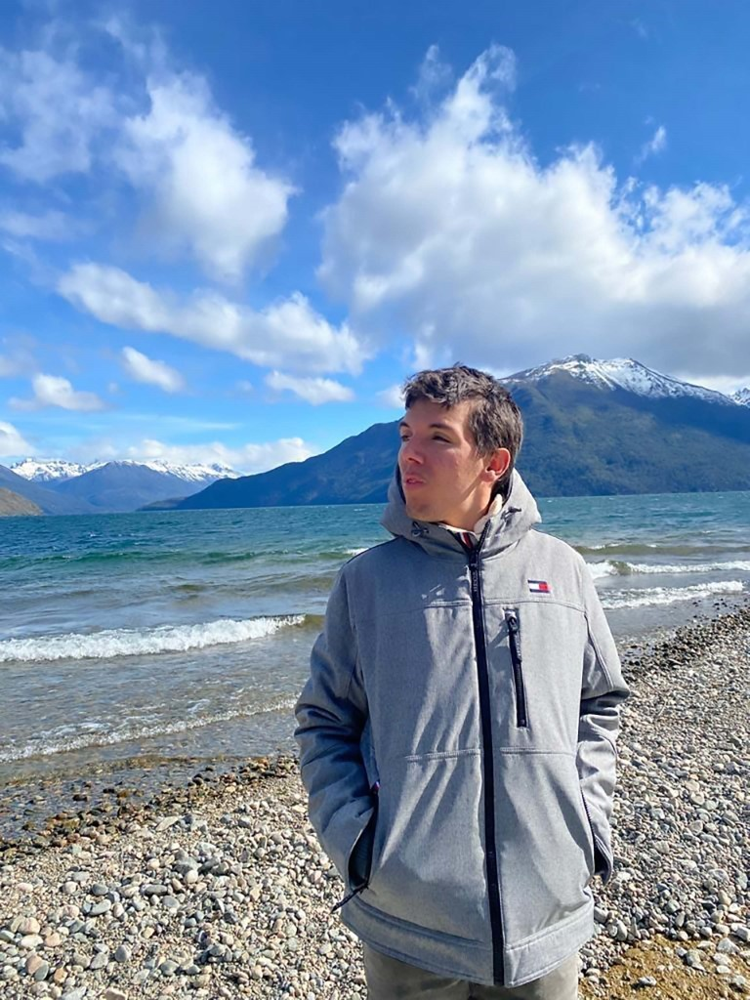

Hoy tuvimos el placer de charlar con Tobias Weinberg, un joven argentino de 26 años con una particular comprensión del universo, que nos cuenta su historia y se convierte en un gran ejemplo para todxs nosotrxs.
En su vida se encontró con grandes desafíos, “cómo todos” recalca él, pero que supo aprovechar como fortalezas y le permitieron llegar a donde está hoy.
Tobías, desde antes de saber hablar, ya era un apasionado de la tecnología y la electrónica, y desde muy pequeño se plantó un objetivo, que al día de hoy está cumpliendo: Estudiar en Nueva York ingeniería en ciencias de la computación. Tobi cuenta que él siempre supo para qué vino al mundo “ayudar a la humanidad a través de la tecnología”. Esta certeza le dió la fuerza para atravesar toda clase de desafíos, llegar al infinito y más allá.
A los 15 años, casi de un día para el otro, a Tobias lo diagnosticaron con una enfermedad que cambió su vida, pero no sus planes. La enfermedad de Wilson lo hizo pasar más de un mes de su adolescencia internado en el hospital infantil, y le dejó una severa dificultad en el habla y la motricidad. Pero, lo que rescatamos en esta nota, es cómo él decidió tomarse esta experiencia. Todxs lo que lo conocen cuentan que cuando iban a visitarlo al hospital Tobi siempre los recibía con una gran sonrisa. Incluso se acercaba a charlar y trataba de hacer sonreir, acompañar o ayudar a los demás pacientes del Garrahan.
“Había en él una gran aceptación y un fluir con la enfermedad que era admirable para quienes estaban cerca”.
Cuando le preguntamos a Tobi sobre este periodo tan radical, él nos sorprende con su respuesta: “Simplemente era algo que me tocaba vivir y lo acepté de esa manera, fue muy natural para mi. Yo creo que todxs tenemos cosas que atravesar, pero que la verdadera y única limitación es unx mismx”.
Desde los 15 años Tobi mantiene esa mentalidad, y es por eso, que nunca dejó que las dificultades físicas, sociales o económicas le impidan lograr nada de lo que se propone.
Él nos revela su secreto: “Yo aprendí a fluir con el universo y dejar que me lleve a donde me tenga que llevar, generalmente lugares que jamás hubiese imaginado, sin dejar de tener claro mi objetivo”.
Tobi trae una sabiduría innata, que todxs podemos cultivar, sobre la interconexión con el todo. Somos parte de algo más grande que nosotrxs, que sigue una lógica que aun no llegamos a comprender, pero entregarse y aceptar, nos facilita el camino mucho más de lo que creemos, y esta historia es el ejemplo concreto de esto.
Tobias desde los 7 años le dijo a sus padres que él iba a vivir en Estados Unidos e inventar cosas que ayuden a las personas. Las vueltas de la vida no fueron como él esperaba, pero, hoy en día, él fue reclutado y becado por una de las universidades norteamericanas más prestigiosas para hacer eso que él trae tan claro desde que nació. La enfermedad no fue la única barrera, sino también el idioma, los recursos económicos, la exigencia académica. Una pandemia, una guerra, y 4 años solo en un país desconocido sucedieron en el medio.
Sin embargo, Tobi realmente habita la vida desde la aceptación y eso es lo que le permite agradecer cada una de las experiencias que vive y convertirlas en fortalezas para atravesar los próximos desafíos. Según él: “ Las señales del universo aparecen y forman un sendero, que, aunque no es lineal, está conectado, y abre las puertas en el camino que decidimos tomar, simplemente hay que estar atentx y trabajar en conjunto con esta fuerza mayor. Ver los desafíos como oportunidades, porque generalmente en el momento no podemos entender por qué vivimos lo que vivimos, pero al final unx puede ver como todo tiene un verdadero sentido”.
Si bien Tobias hoy está cumpliendo su sueño en Estados Unidos, en el medio tuvo que vivir en otro país muy distinto, Israel, porque es la oportunidad que surgió un día “de casualidad” aparentemente, en donde le ofrecieron una beca para realizar sus estudios universitarios, ya que en EE.UU en un principio no tuvo esa posibilidad.
Más allá de su gran capacidad y talento, y de haberse recibido con honores en el secundario técnico ORT, cuando llegó a Israel, Tobi descubrió que el plan de estudios que había recibido en Argentina era muy distinto al del resto de los países, por lo que estaba muchísimo más atrasado que el resto de sus compañeros en las materias. Sus profesores no mostraron ningún tipo de distinción en este sentido, y le exigieron de la misma manera que aquellxs alumnxs que contaban con bases más sólidas y avanzadas. El joven relata que esto fue un gran desafío para él, pero que una vez terminada la cursada, pudo agradecerle de corazón sobre todo al profesor que fue más duro con él, e incluso le escribió un mail para expresarle este agradecimiento, porque esto lo llevó a superar sus límites y a sentirse mucho más preparado para su vocación. Este es otro sencillo ejemplo del lente con el que mira Tobi el mundo.
Tiempo después él comenzó a sobresalir en la universidad y lo llamaron para participar de distintos grupos de investigación desde drones y robótica hasta satélites lunares. Tobi, quien según los médicos no iba a poder alimentarse solo ni siquiera, lleva ya 4 años viviendo, estudiando y trabajando en el exterior y con grandes planes para su futuro. Sin dejar jamás que otrxs, su enfermedad o el mismo, lo limiten. Sus proyectos, como indica más arriba, están muy relacionados con el nuevo mundo. Él cuenta que ve en la tecnología una herramienta para ayudar, y planea inventar todo tipo de aparatos para ayudar a cuantas personas le sea posible.
Una historia de autosuperación y conciencia de interconexión con el universo, que nos muestra otra manera de vivir y habitar las experiencias que nos tocan para no dejar que estas nos limiten, sino que por lo contrario, nos fortalezcan. “Si uno acopla sus planes con los que el universo tiene para nosotrxs entonces nunca está solo, es un acto de fe que nos da la fuerza para lograr todo lo que nos propongamos”.
Hoy tuvimos el placer de charlar con Tobias Weinberg, un joven argentino de 26 años con una particular comprensión del universo, que nos cuenta su historia Tobi tiene una cualidad muy especial y es que puede ver más allá y dejarse llevar. Llevado a lo concreto esto significa que Tobi comprendió que confiando en el universo las cosas se ordenan solas. Él desde muy pequeño se visualizó viviendo en Estados Unidos y haciendo lo que vino a hacer al mundo: inventar cosas para ayudar a las personas a través de la tecnología.
Sin embargo, nació en Argentina y llegar a EE.UU no es nada fácil, pero sin saber ni cómo, ni cuándo, ni con quién, hoy su historia concluye donde para él recién empieza. Tobi siempre tuvo esta certeza, y esa fuerza lo llevó a hacer un largo recorrido que lo fortaleció y lo preparó para este momento.
En el camino hacia su objetivo, Tobi se encontró con: una grave enfermedad; un país desconocido; grandes exigencias académicas; una pandemia; una guerra; y una serie de eventos que parecían meras casualidades, pero que hoy Tobias ve claramente que tenían un profundo sentido dentro de su historia.
Si bien su vida estuvo llena de desafíos, “como la de todxs” recalca él, pudo encontrar en ellos las claves que necesitaba para encajar todas las piezas de su gran rompecabezas.
Tobías, desde antes de saber hablar, ya era un apasionado de la tecnología y la electrónica, y cuenta que él siempre supo para qué vino al mundo: “ayudar a la humanidad a través de la tecnología”.
Esto lo tiene claro desde que tiene uso de razón, y las pruebas que aparecieron en el camino se convirtieron en fortalezas, gracias a su sincera fe y confianza en el universo todopoderoso.
A los 15 años, casi de un día para el otro, a Tobias lo diagnosticaron con una enfermedad que cambió su vida, pero no sus planes. La enfermedad de Wilson lo hizo pasar más de un mes de su adolescencia internado en el hospital de niños, y le dejó una severa dificultad en el habla y la motricidad. Pero, lo que rescatamos en esta nota, es cómo él decidió tomarse esta experiencia.
Todxs lo que lo conocen cuentan que cuando iban a visitarlo al hospital Tobi siempre los recibía con una gran sonrisa. Incluso se acercaba y trataba de hacer sonreir, acompañar o ayudar a los demás pacientes del Garrahan.
“Había en él una gran aceptación y un fluir con la enfermedad que era admirable para quienes estaban cerca”.
Cuando le preguntamos a Tobi sobre este periodo tan radical, él nos sorprende con su respuesta: “Simplemente era algo que me tocaba vivir y lo acepté de esa manera, fue muy natural para mi. Yo creo que todxs tenemos cosas que atravesar, pero que la verdadera y única limitación es unx mismx”.
Desde los 15 años Tobi mantiene esa mentalidad, y es por eso que nunca dejó que las dificultades físicas, sociales o económicas le impidan lograr nada de lo que se propone.
Él nos revela su secreto: “Yo tengo clara mi aspiración y aprendí a fluir con el universo para dejar que me lleve a donde me tenga que llevar, generalmente a lugares que jamás hubiese imaginado, para poder cumplirla”.
Tobi trae una sabiduría innata, que todxs podemos cultivar, sobre la interconexión con el todo. Somos parte de algo más grande que nosotrxs, que sigue una lógica que aun no llegamos a comprender, pero entregarse y aceptar, nos facilita el camino mucho más de lo que creemos, y esta historia es el ejemplo concreto de esto.
Tobias desde los 7 años le dijo a sus padres que él iba a vivir en Estados Unidos e inventar cosas que ayuden a las personas. Las vueltas de la vida no fueron como él esperaba, pero, hoy en día, él fue aceptado y becado por la universidad de Cornell, una de las más prestigiosas de norteamérica, para hacer eso que él trae tan claro desde que nació.
Si bien Tobias hoy está cumpliendo su sueño en Estados Unidos, en el medio tuvo que vivir en otro país muy distinto: Israel, ya que allí es donde surgió una oportunidad “de casualidad” aparentemente. En Technion Israel Institute of Technology le ofrecieron una beca para realizar sus estudios universitarios, mientras que en EE.UU en un principio no tuvo esa posibilidad.
Más allá de su gran capacidad y talento, y de haberse recibido con honores en el secundario técnico ORT, cuando llegó a Israel, Tobi descubrió que el plan de estudios que había recibido en Argentina era muy distinto al del resto de los países, por lo que estaba muchísimo más atrasado que el resto de sus compañeros en las materias. Sus profesores no mostraron ningún tipo de distinción en este sentido, y le exigieron de la misma manera que aquellxs alumnxs que contaban con bases más sólidas y avanzadas. El joven relata que esto fue un gran desafío para él, pero que una vez terminada la cursada, pudo agradecerle de corazón sobre todo al profesor que fue más duro con él, e incluso le escribió un mail para expresarle este agradecimiento, porque esto lo llevó a superar sus límites y a sentirse mucho más preparado para su vocación. Este es otro sencillo ejemplo del lente con el que mira Tobi el mundo.
Tiempo después él comenzó a sobresalir en la universidad y lo llamaron para participar de distintos grupos de investigación desde drones y robótica hasta satélites lunares. El verano pasado, Tobi tuvo la oportunidad de hacer una pasantía en Cornell University, donde destacó por su facilidad y velocidad para realizar las tareas que le asignaban. Su profesora Wendy Ju se impresionó porque este joven, a diferencia del resto de los pasantes, se motivaba con los retos que aparecían para seguir investigando, mientras que la mayoría se frustraba cuando se encontraba con problemas “sin solución”, o al descubrir que los profesores no tenían todas las respuestas. Esta característica particular de Tobias, hizo que la Dra Ju vea en él el potencial para realizar un PhD, y así es como terminó aplicando para el doctorado en ciencias de la computación.
Tobi, quien según los médicos ni siquiera iba a poder alimentarse solo , lleva ya 4 años viviendo, estudiando y trabajando en el exterior y con grandes planes para su futuro. Sin dejar jamás que otrxs, su enfermedad o él mismo, lo limiten.
Sus proyectos, como indica más arriba, están muy relacionados con el nuevo mundo. Él cuenta que ve en la tecnología una herramienta para contribuir con el planeta, y planea inventar todo tipo de aparatos para ayudar a cuantas personas le sea posible. La travesía de Tobi no fue nada parecido a lo que hubiese imaginado, pero él nunca dudó de que si eso era lo que tenía que hacer, entonces, las cosas se iban a ordenar para que así sea.
Esta manera de entender las fuerzas del universo fue un gran apoyo, y lo sigue siendo. Tobi realmente habita la vida desde la aceptación y eso es lo que le permite agradecer cada una de las experiencias que vive y convertirlas en fortalezas para atravesar los próximos desafíos. Según él: “ Las señales del universo aparecen y forman un sendero, que, aunque no es lineal, está conectado, y abre las puertas en el camino que decidimos tomar, simplemente hay que estar atentx y trabajar en conjunto con esta fuerza mayor. Ver los desafíos como oportunidades, porque generalmente en el momento no podemos entender por qué vivimos lo que vivimos, pero al final unx puede descubrir como todo tiene un verdadero sentido”.
Los obstáculos no son casualidades, sino procesos de aprendizaje que necesitamos atravesar.
Lo difícil de mantener esta conciencia es tenerlo presente a la hora de enfrentarnos con los desafíos y contratiempos, que nunca van a dejar de aparecer, pero es una gran práctica, que como este joven ilustra, permite vivenciarlos de otra manera. Confiar en el universo significa dejar de lado el ego, y transformar el “yo quiero” por el “yo me entrego”. La naturaleza tiene la inteligencia más desarrollada de todas, sólo debemos dejarnos guiar por ella. Cuando nos obsesionamos por entenderlo todo, miramos solo lo que “no esta saliendo bien” o intentamos controlar lo incontrolable, perdemos de vista el foco y no podemos aprender de las oportunidades que la vida nos está trayendo.
Cuando la aspiración es sincera, el universo conspira a nuestro favor, aunque quizás en el momento no podamos comprenderlo.